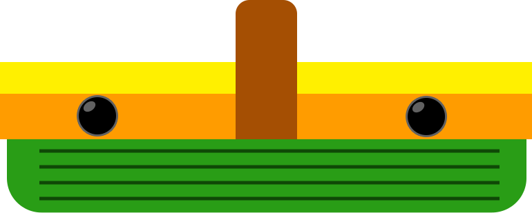
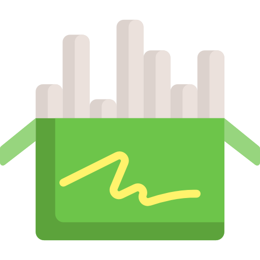

9.
카카오 지도 API 라이브러리 사용
21년07월22일


| 제목 | 작성자 | 작성일 | |
|---|---|---|---|
| 🗒 | 자바스크립트 검색 기능 구현 | 방혜성 | 2021-08-10일 |
| 📖 | 카카오 지도 API 라이브러리 사용 | 방혜성 | 2021-07-22일 |
| 📱 | 카카오 지도 API | 방혜성 | 2021-07-22일 |
| 💻 | GSAP 슬라이드 만들기 | 방혜성 | 2021-07-02일 |